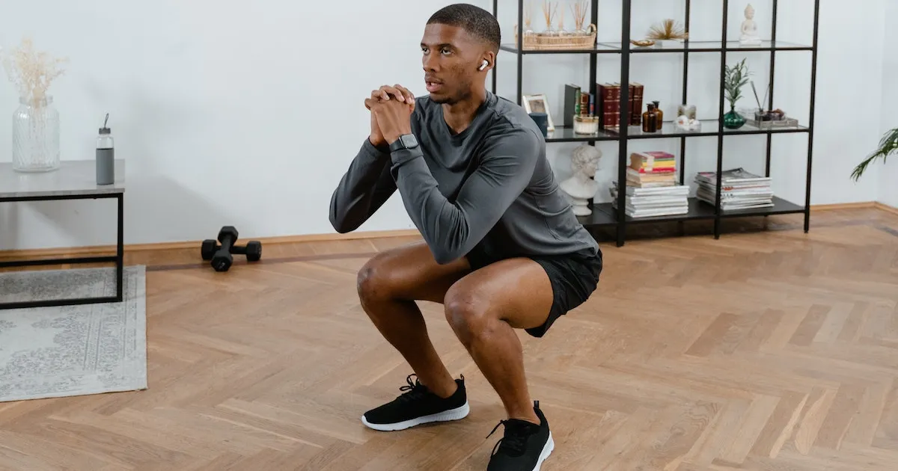
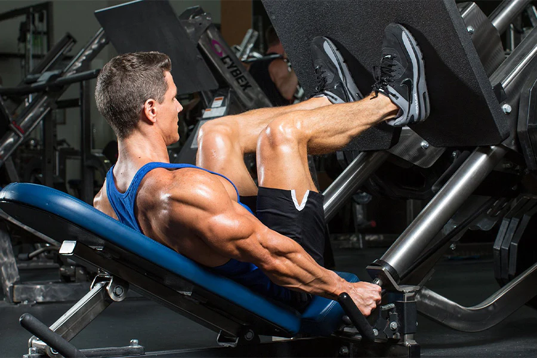
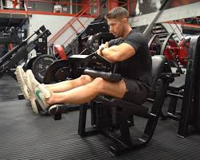
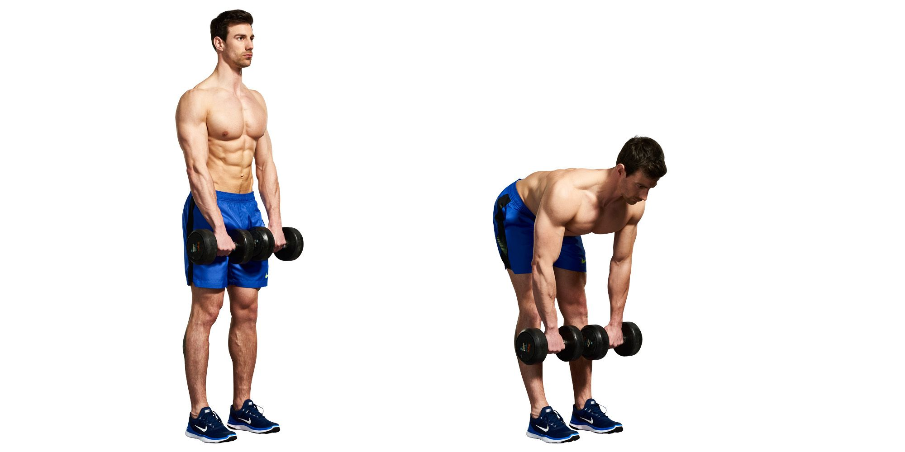
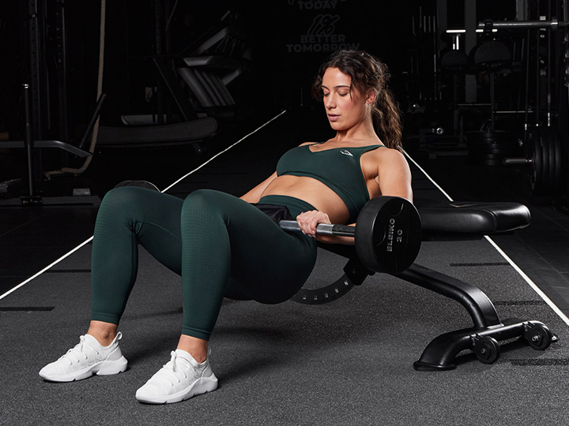
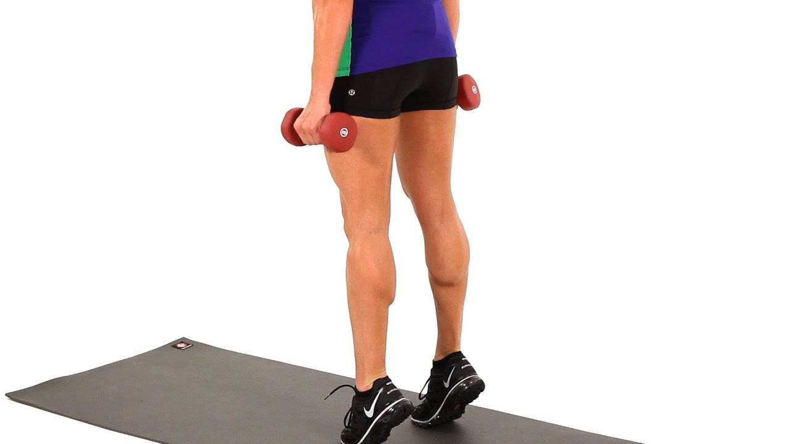
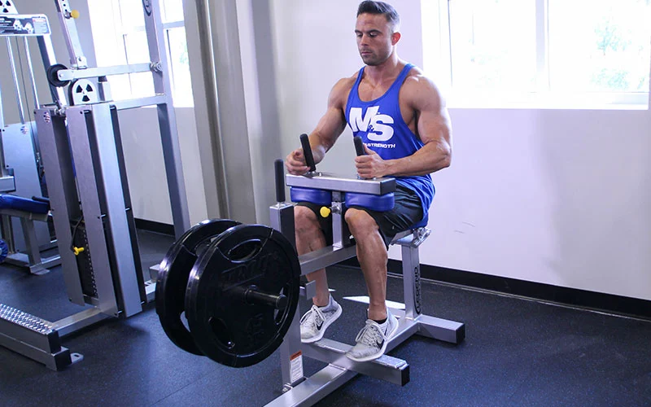

Leg Workouts
Quadriceps Workouts
Squats
Squats are a fundamental exercise that targets the quadriceps, glutes, and hamstrings.
Movement Category: Primary
Programming: 3-4 sets of 8-12 repetitions
Weight: Use a weight that allows for proper form.
To do squats:
- Stand with feet shoulder-width apart and hold a barbell across your shoulders.
- Bend your knees and lower your body until your thighs are parallel to the ground.
- Push through your heels to return to the starting position.
Leg Press
Leg press targets the quadriceps and is an effective exercise for leg strength and hypertrophy.
Movement Category: Primary
Programming: 3-4 sets of 10-15 repetitions
Weight: Adjust weight to maintain proper form.
To do leg press:
- Sit on the leg press machine and place your feet shoulder-width apart on the platform.
- Push the platform away by extending your legs.
- Slowly lower the platform back to the starting position.
Hamstrings Workouts
Hamstring Curls
Hamstring curls focus on the hamstrings and are great for improving strength and flexibility.
Movement Category: Primary
Programming: 3-4 sets of 10-15 repetitions
Weight: Use a weight that challenges but allows for controlled movements.
To do hamstring curls:
- Lie face down on the hamstring curl machine and position your legs under the padded lever.
- Flex your knees to lift the lever towards your glutes.
- Slowly lower the lever back to the starting position.
Romanian Deadlifts
Romanian deadlifts are effective for targeting the hamstrings and glutes while improving overall posterior chain strength.
Movement Category: Primary
Programming: 3-4 sets of 8-12 repetitions
Weight: Use a moderate weight for proper form.
To do Romanian deadlifts:
- Stand with feet shoulder-width apart and hold a barbell in front of your thighs.
- Bend at the hips while keeping your back straight and lower the barbell towards the ground.
- Return to the starting position by extending your hips.
Glutes Workouts
Hip Thrusts
Hip thrusts are excellent for isolating and building the glutes.
Movement Category: Primary
Programming: 3-4 sets of 10-15 repetitions
Weight: Use a weight that allows you to perform the exercise with good form.
To do hip thrusts:
- Place your upper back against a bench and roll a barbell over your hips.
- Lower your hips to the ground and then thrust them upward while squeezing your glutes.
- Return to the starting position.
Glute Bridges

Glute bridges help target the glutes and improve lower body strength and stability.
Movement Category: Primary
Programming: 3-4 sets of 15-20 repetitions
Weight: Bodyweight; add a barbell for more resistance if needed.
To do glute bridges:
- Lie on your back with your knees bent and feet flat on the floor.
- Lift your hips towards the ceiling while squeezing your glutes.
- Lower back to the starting position.
Calves Workouts
Standing Calf Raises
Standing calf raises are a key exercise for developing the calf muscles, focusing on the gastrocnemius.
Movement Category: Primary
Programming: 3-4 sets of 12-15 repetitions
Weight: Use bodyweight or add resistance for added difficulty.
To do standing calf raises:
- Stand with your feet shoulder-width apart and rise onto your toes.
- Lower back down slowly.
Seated Calf Raises
Seated calf raises target the soleus muscle of the calves.
Movement Category: Primary
Programming: 3-4 sets of 12-15 repetitions
Weight: Use a weight that allows for full range of motion.
To do seated calf raises:
- Sit on a calf raise machine with your feet on the platform and weights resting on your knees.
- Raise your heels as high as possible and then lower them back down.